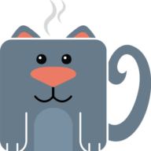

Great coffee.
Happy cats.
Cozy space.
Kitty Brew Cat Café is a place where coffee lovers and cat lovers come together. Enjoy a handcrafted drink while relaxing in a cozy space filled with adoptable cats.
Reservations recommended.
Walk-ins welcome if there is room.
Never been to a cat cafe before? Here's how it works!
Kitty Brew Cat Café is a unique experience where you can sip coffee, relax, and spend time with adoptable cats. We partner with local rescues to provide a comfortable environment for our feline friends while helping them find forever homes.
The Café
Enjoy a variety of coffees, teas, cold drinks, and snacks in a cozy setting.
The Lounge
Spend time with our cats, play, relax, or just enjoy their company.
Adoptions
If you fall in love, you may be able to take a furry friend home!
- Book a timeReserve a 50-minute lounge visit online. Walk-ins welcome if there's room.
- Check inSign the quick waiver when you arrive. You can read it ahead of time.
- Grab a drinkOrder a latte, tea, or smoothie from the café to bring into the lounge.
- Meet the catsRelax with 20–25 adoptable cats. Let them come to you!
Making a difference, one cat at a time
into loving homes
Kitty Brew Cat Café is more than just a coffee shop. It's a cozy space where cat lovers and coffee enthusiasts come together, and since opening we've helped over 4,300 cats find loving homes through our partnerships with local shelters and rescues.
Even if you're not looking to adopt, you can still enjoy quality time with friendly, adoptable cats in our relaxing lounge. Whether you already have pets at home, live somewhere that doesn't allow them, or just love being around cats, Kitty Brew is the perfect place to unwind.
Not visiting the lounge? No problem! Our café is free to enter and always open to the public. Grab a handcrafted coffee, tea, or smoothie on your way to work, or stay and enjoy the welcoming atmosphere. Every visit directly supports our rescue efforts and helps more cats find homes!

kittybrewcafe
Lattes + lounge cats = purrfection 😻
CustomerTestimonials
If you like cats and want to play with them, this is your place! If you're looking to adopt, you can find pretty much any temperament here and see how they like you. Such a calming and cat-egorically fun place 😺
This is a wonderful place to go to interact with and adopt cats. It is also great for a family outing or date night to just play with cats even if adopting is not an option for you. The staff is friendly and creates a fun environment for visitors while prioritizing the safety and wellbeing of the cats.
I love this place. It's a great cause, they keep it immaculate and the drinks are fabulous. You just have to get a time slot ahead of time. Staff is always so nice. I love getting my kitten fix and watching them play. It's my happy place.
This is probably the best cat cafe I've ever been to! Out of about a dozen cats only 1 was standoffish, which is especially crazy since several were recently spayed/neutered. Lots of playful kittens, toys, and seating. The drinks were good too.
I went here to get a cat and they were so nice and helpful. It's really easy to find one because they're all just playing in one room and you can see how each of them act. It was such a good experience.
Highly recommend if you are looking to adopt or just need a pick me up. The coffee is good as well as the treats. Cat cafe was clean and staff was amazing. Be careful if you don't want to take a furry friend home because we almost left with a new kitty.
Really lovely café with wonderful staff. They were very warm and receptive as soon as we walked through the door and answered any questions we had. Delicious selection of drinks and treats on their menu and adorable array of gifts/merch in the gift shop area!
Our whole family spent some quality time together and with kitties last night at Kitty Brew! Great Friday night family outing. Delicious beverages and cute, playful felines. 10/10
New location!
Kitty Brew Cat Café721 Reading Road
Mason, OH 45040
At the corner of Tylersville & Reading Road.
Across from the WLW tower.